The One Handed Topspin Backhand-The Backswing(s)¶
The One-Handed Topspin Backhand
The Backswing(s)
John Yandell
In the first two articles on the one-handed backhand, we looked at the grips, the grip shifts, and the start of the preparation, or the unit turn. (link.) Now let's look at the shape, or shapes, of the backswings themselves.
We'll also see how the backswing is related to the completion of the turn. Again we'll look at both the classical and the extreme variations and see where they overlap and how they differ, although you may be surprised at what we do, or don't find.
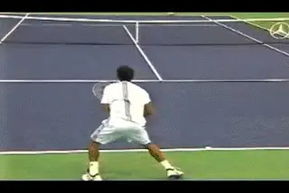
Is there meaning in the size and shapes of the backswings?
Backswing Shapes
In our analysis of the modern forehand, we found that no two forehand backswings were exactly alike. We also found that with the forehand there were no clear correlations between grip style and backswing size and shape. (link.) It's a similar picture with the one-handed backhand.
When you start looking closely at the motions of the top one-handed players, each one is different. The range of differences is probably less than the forehands, but contrary to what is often claimed, there are no absolute distinctions between the classical and extreme styles.
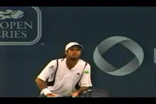
How do we judge backswing height: the hand or the racket?
[As with the forehand, the size of the one-handed backswing can be judged on three different factors. The first factor is the height of the tip of the racket. The second factor is the height of the hand. The third factor is side to side movement, or how far away the player takes the hand and racket away from the body.] These three factors can be combined in many ways, and the way they are combined accounts for the unique shape of every player's motion.
Backswing Height
Looking at the backswing height first, we can see that the height of the hand and the height of the racket don't necessarily go together. You see players with high racket positions and low hand positions, and vice versa.
To understand how this works, you have to look at where the players point the racket tip as they start the motion. If a player points the tip more directly upward the racket position will be higher. If the player angles the tip more backwards, the racket height will be lower.
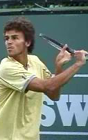
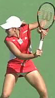
[The height of the backswing varies across the classical and extreme styles.]
Some players point the tip almost directly up,but keep the hand position relatively low. But a player can also have a very high hand position at the top of the backswing and angle the racket backwards until is almost parallel with the court. How do the classical and extreme styles compare?
Gustavo Kuerten, one of the pioneers of the extreme style, has the highest hand position, but also has the lowest racket tip position. His hand is at about shoulder level, but the racket is tilted back almost parallel with the court, so the tip is actually slightly below head level. Some of the classic players, including Blake, Henman, Federer, and Haas, have a much lower hand position. But the tip of their racket is higher than Guga because it points basically straight up and down.
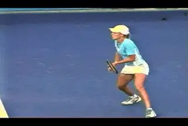
A lower hand position is often combined with an upright racket tip.
But this same combination of a lower hand and higher racket tip is also used by several extreme players, for example Justine Henin-Hardenne and Gaston Gaudio. So there isn't really a correlation with grip style. The players seem to combine the elements as a matter of personal style. Mark Philippoussis, also classical grip player, has a higher hand position than either Justine or Gaudio, but he has a higher racket position as well, bending his elbow at the top of the backswing more than most other players, and pointing the racket tip directly upward.
Having said all this, it is definitely true that some extreme players do combine the high hand and racket position. It's just not a universal characteristic of that style as is sometimes argued. The two extreme players with the highest backswing positions are Fernando Gonzales and Tommy Rebredo. Their hands are at about shoulder level, and the racket tips are pointing more or less straight up and down. This places most or all of racket head above head level. Richard Gasquet, another extreme player, also has high racket and hand positions, though probably slightly lower than Rebredo or Gonzales.
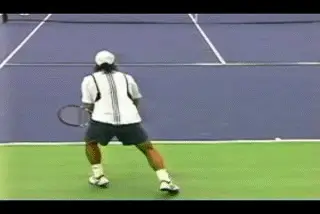
How much variety is there in sideways motion?
Side to Side Movement
When we look at the side to side component in the backswing there is somewhat greater correlation with grip style. In general the classic players hold their hands closer in to the torso at the start of the backswing. Philippoussis seems to have the least outward orsideways motion and the tightest hand position. Blake and Henman, two other classic players, also have close hand positions. But there are exceptions. Paradorn Srichaphan, who has an extreme grip, keeps his hand in as tight as the classic players. And Federer and Tommy Haas, both with classic grips, appear to take their hands out somewhat further than Srichaphan.
In general though the more extreme players do tend to go further outside. You can see this is the stills of Gaudio, Kuerten, Gonzales, and Robredo. But only Gonzales and Robredo combine this outside position with a super high hand and racket position.
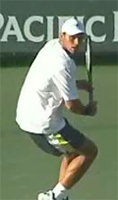
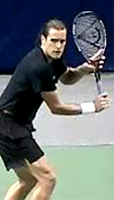
The variations in distance between the hand and torso.
Backswing Path
So we've looked at the height and the width, but how does the backswing motion actually start? What path does the racket take to reach the various positions we've detailed above? Again we can find a partial correlation between racket path and grip.
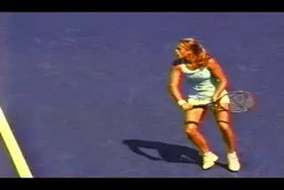
The racket can travel immediately upward or straight back.
Almost all of the players with extreme grips start the backswing by moving the hand immediately upward on a diagonal. This is compared to the classical players who, at least initially, tend to start the motion going more straight back with the hand.
But how far does this upward motion continue? An extreme grip player like Justine Henin-Hardenne starts the hand immediately upward and backward on a diagonal, but the motion is abbreviated and very compact, with a low hand position and a low racket tip at the top of the backswing.
In comparison, a classic grip player like Philippoussis starts straight back, but ends up actually raising the hand much higher at the top of the backswing than Henin-Hardenne. Players like Henman, Blake, and Federer also start straight back, but all end up with lower positions at the top of the motion.
Robredo starts back on a diagonal, and continues upward until he reaches the extreme position at the top of his backswing noted above. Gustavo Kuerten also takes his hand back on a steep diagonal to the highest position of any player, but as we saw, tilts the racket tip backwards and keeps it below head level.
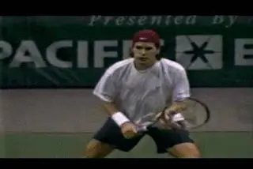
There are no absolute correlations between grip and backswing.
Fernando Gonzales, also with an extreme grip, breaks the pattern of upward diagonal movement, and actually does something similar to Philippoussis. He starts the racket straight back, but bends his elbow and raises his hand dramatically at the end to match the height of Robredo. But unlike Philippoussis who keeps his hand in closer, Gonzo simultaneously takes his hand out further to his side, again similar to Tommy at the top of the backswing.
You get the idea. There are no neat, simple descriptions. The backswings for players with classic grips tend to be more compact, and extreme players tend to have the largest backswings, but there is a lot of middle ground with different combinations of the backswing elements across the grip styles. And the more players you look at, the more variations and combinations, you'll find. So how important are these differences? What does all that really mean?
Bottom of the Backswing
Could the larger backswings be giving players more racket head speed? Or could they a disadvantage because they take more time? Is their some ideal combination of hand height, racket height and side to side movement? Those questions are difficult or impossible to answer definitively, although if we had detailed quantitative data it might increase our understanding.
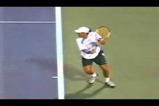
[The purpose of the backswing is to position the racket to hit.]
What we can say is that the various combinations all seem to work very well for the top players we have studied. And all the different shapes and sizes serve a common purpose. We can see the evidence of this by looking closely at what happens at the bottom of the backswing.
In our study of the forehand, we saw that the function of the backswing was to deliver the arm and racket to the key hitting arm position at the start of the forward swing. The same basic point applies on the one-hander. The backswing delivers the racket to a similar point for the all the players just before the swing starts forward. In all cases the hand comes in toward the body from the widest point in the swing. The racket head drops slightly below the level of the ball, and as we'll see below, the tip of the racket points behind the player toward the sideline, with the left hand still on the throat of the racket.
There is also a correlation between the position of the racket and two other key technical elements. These are the full shoulder turn and the step to the ball with the front foot. All the players have reached the point of maximum turn with their shoulders somewhat past perpendicular to the net. They have also shifted the weight forward to the front foot and come up on the toes of the rear foot. Note the bend in the front knee, and also, how they are all staying relatively upright in the torso.
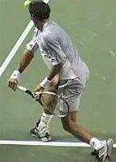
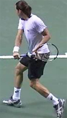
What are the key similarities and differences at the bottom of the backswing?
Those are the similarities, but now look at [the two main differences. These are the exact distance of the hand from the torso, and also the total amount of shoulder turn.] These two factors, the hand position and the amount of shoulder turn, are interrelated. [More shoulder turn seems to coincide with a closer in hand position at the bottom of the backswing.]
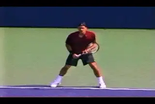
The step and the full turn coincide with the bottom of the backswing.
Again it's difficult to correlate the distance of the hand from the body and the amount of turn with the grip style. At the bottom of the backswing, Paradorn Scrichaphan has the hand position furthest from the body and slightly less shoulder turn. This is especially interesting because his hand stayed quite close at the start of the backswing as we saw above. But Paradorn brings his hand more straight down, whereas the other players all tend to pull the hand closer in.
We can see this clearly with Gaston Gaudio, also an extreme grip player, but at the other end of the spectrum from Srichaphan. Notice he has the most body turn, with his shoulders at 45 degrees to the baseline or maybe even a little more, and also the closest hand position. The other players are on a continuum somewhere in between. Again, you can see the range is a mix between the classic and extreme grips.
Where Does the Racket Tip Point?
There is one other element to look at here, which is [how far behind the body the various players take the racket, and where the racket tip points.] Because of the visual resources we have on the site, many coaches and players have noticed that the racket tends to point more towards the sideline than the back fence, as is often advised in traditional teaching. In many cases the shaft of the racket appears parallel with the baseline or close to it.
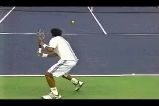
How far is the racket behind and what is the angle of the tip?
This position seems to be a function of the amount of turn and the hand position. If we look at Gaudio, the tip of the racket is pointing literally at the sideline, with the shaft of the racket parallel to the baseline. His racket has gone quite far behind his body as well, with the racket head actually on his right side.
The other players have less extreme versions of this position, and again it's on a continuum. The further the shoulder turn and the closer the hand position to the body, the closer the racket is to parallel with the baseline and the further the racket head tends to reach behind the body.
Notice that all the examples in the still images are closed stance backhands. There is a reason for looking at it this way. This is because the closed stance exaggerates both tendencies and makes them more visible for comparative purposes. But we see the same factors at work in the other stances as well.
Closed stance positioning is controversial in coaching. But the truth is that the closed stance is probably the most common backhand stance in pro tennis and is used on almost all balls that are left of center or wide in the court. The players do use neutral stance, most typically around the middle of the court. Depending on the position and circumstance, they will use open stance as well.
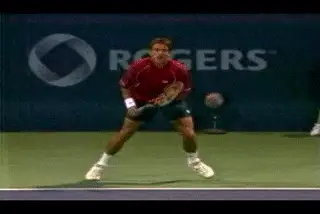
Top players use multiple stances depending on position and circumstance.
Let me make it clear now that I'm not necessarily advocating the closed stance for the average player, and in most cases, probably the opposite. It's just that the closed stance reveals some of the differences in the backswings we've been studying. In a subsequent article, we'll look more closely at the stances and what they mean, why the pros hit so many closed stance backhands, and how you should model the stance for yourself.
The Pay Off
So it's a lot of detailed analysis to pick out the differences and the similarities in the backswing motions. Why go to the effort? In coaching and teaching I find that players and teaching pros often focus on idiosyncratic aspects of a particular player's motion, and often this aspect is the backswing. We tend to think if a player has a great backhand and a really large backswing, well, it must be the large backswing. Or if a player has a really great backhand and a very compact backswing, well, maybe it's the compact backswing. I've heard it passionately argued both ways. Those judgments don't make sense though when we look closely at the entire motion.
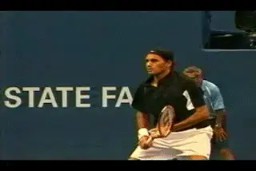
Studying the range of players is the key to understanding the backswing.
Examining so many different players with the full range of possible grips is the only way to see whether the differences in the backswing are somehow influencing the other key parts of the swing. And what we see is that to a large extent they are not.
What the high speed footage shows is that the main function of the backswing is to connect 2 far more important key points in the larger swing pattern. These are the unit turn and the start of the forward swing. What matters less than the size and shape of the backswing is where the backswing delivers the hand and the racket at the start of the forward motion, and when.
There may be some advantages if the hand position is in closer to the body at the start of the swing, including increases in the amount of the body turn. My opinion is that everything else being equal, more turn and a tighter hand position at the start of the forward swing are probably better. But these differences don't seem related to the height of the backswing or even the width. They can be achieved with very different sizes and shapes in the backswing motion.
So now we are ready to look at the forward swing. The differences and the similarities between the classic and the extreme grip styles have been ambiguous to this point, but I think some clearer distinctions are about to emerge. Stay tuned.

John Yandell is widely acknowledged as one of the leading videographers and students of the modern game of professional tennis. His high speed filming for Advanced Tennis and TPA have provided new visual resources that have changed the way the game is studied and understood by both players and coaches. He has done personal video analysis for hundreds of high level competitive players, including Justine Henin-Hardenne, Taylor Dent and John McEnroe, among others.
In addition to his role as Editor of TPA he is the author of the critically acclaimed book Visual Tennis. The John Yandell Tennis School is located in San Francisco, California.
← Hand and Arm Rotation | Advanced Tennis Index | The Forward Swing →